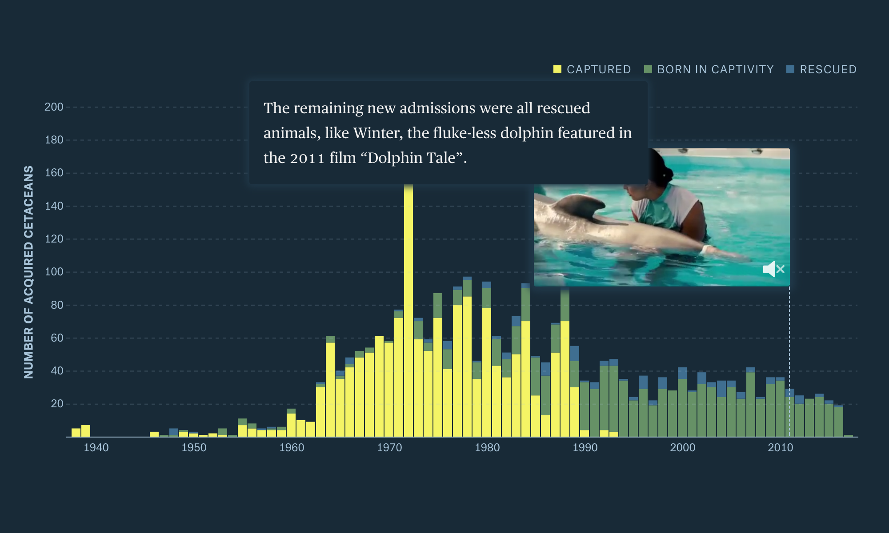
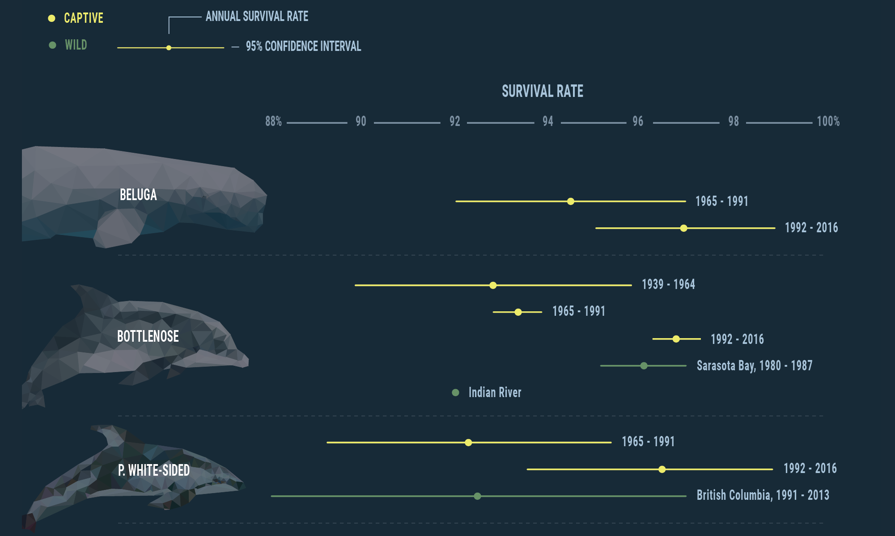
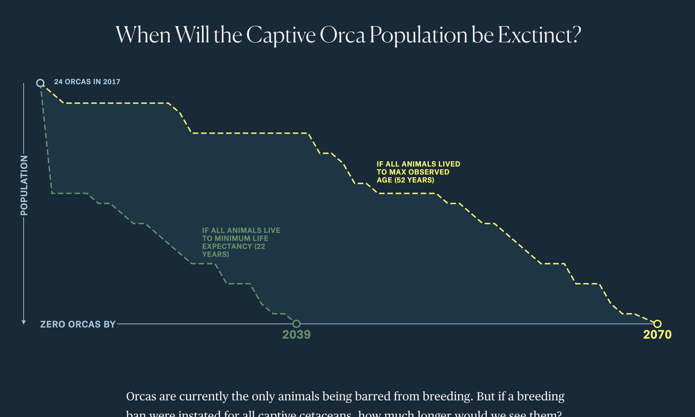
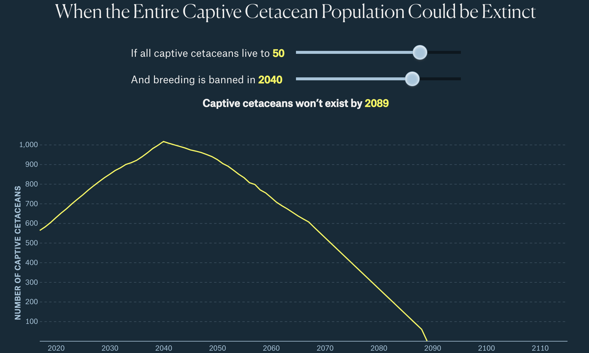

Free Willy and Flipper by the Numbers
July 6, 2017
The Premise
Around the world, people seem to have mixed feelings about whales and dolphins that live in aquariums. While it may be easy (and for some people even preferable) to say that the solution is to release all of the animals back to the ocean, their past makes it more difficult. In this story, we explore the data of where captive whales and dolphins in the US came from, their survival rate, and the projected timing of extinction for these animals in a captive setting.
My Contributions
- Story Idea
- Data Collection
- Data Analysis
- About 70% of Front-End Development (HTML, CSS, and D3)
- Story Writing
Collaborators
This project was done in collaboration with the fine folks at The Pudding. Specifically, Russell Goldenberg who helped this story take shape, gave it a fresh design, fixed some of my coding blunders, and added those great videos to the first chart, and Matt Daniels for those beautiful geometric animals.
Screenshots

Figure 1: The first graphic in this story is driven by the reader’s scrolling. As the story continues, the data and associated videos update to follow along. The last graphic also requires the reader’s input to determine when the population of captive animals in the US could be extinct.
